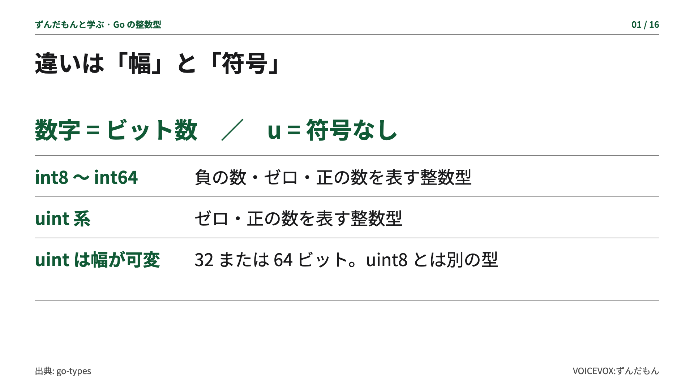
Goの整数型は、幅と符号を分けると理解しやすいのだ。
int8、int16、int32、int64の数字は、使うビット数を表すのだ。
どれも負の数を扱える、符号付きの整数型なのだ。
一方、uint系は符号なし。ゼロと正の数を扱うのだ。
ただし、数字のないuintと、uint8は別の型なのだ。

Goの整数型は、幅と符号を分けると理解しやすいのだ。
int8、int16、int32、int64の数字は、使うビット数を表すのだ。
どれも負の数を扱える、符号付きの整数型なのだ。
一方、uint系は符号なし。ゼロと正の数を扱うのだ。
ただし、数字のないuintと、uint8は別の型なのだ。
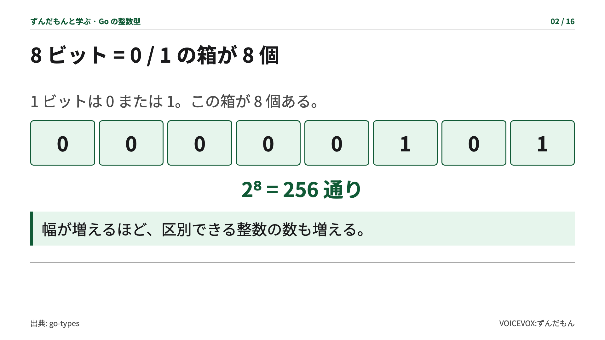
ビットは、ゼロかイチを入れる箱だと考えるのだ。
8ビットなら、箱が8個。並べ方は2の8乗で、256通りなのだ。
右から1と4の位がイチなので、足すと十進数の5になるのだ。
ビット数は十進数の桁数ではなく、この箱の数なのだ。
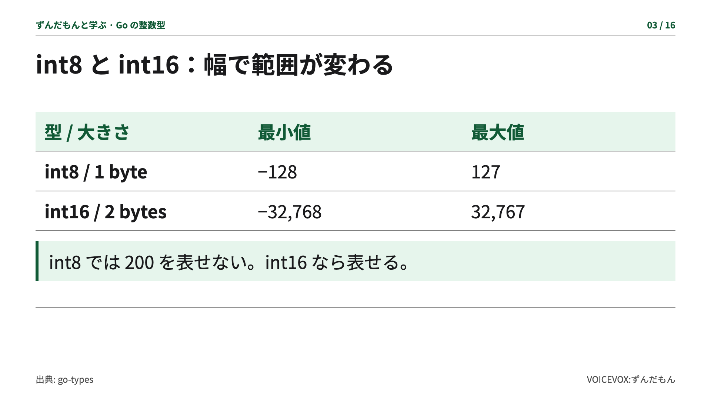
int8は1バイトで、マイナス128から127までなのだ。
int16は2バイトで、マイナス32768から32767まで表せるのだ。
たとえば200はint8の範囲外。でもint16には入るのだ。
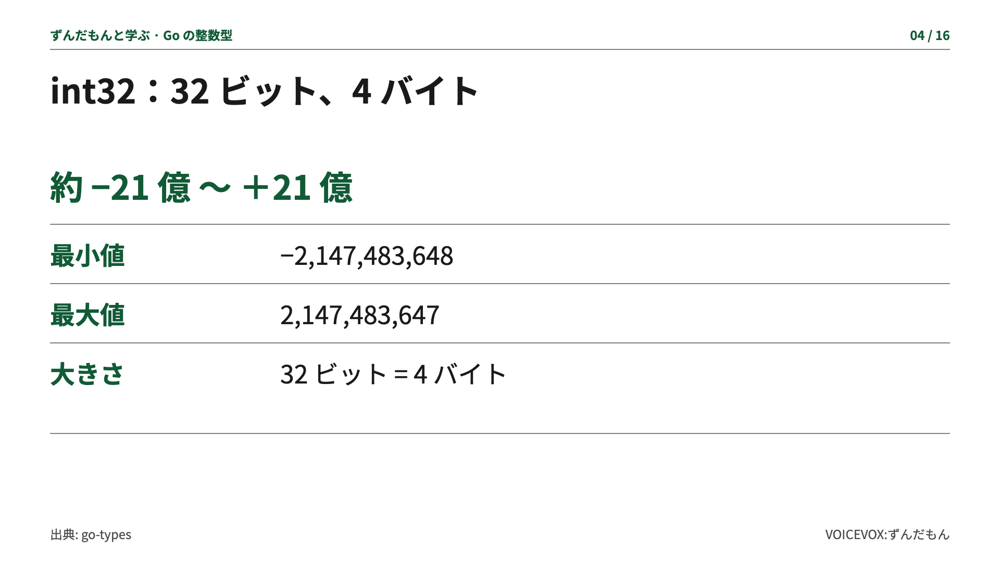
int32は32ビット、4バイトなのだ。
およそマイナス21億から、プラス21億までの整数を扱えるのだ。
正確な最小値と最大値は、画面のとおりなのだ。
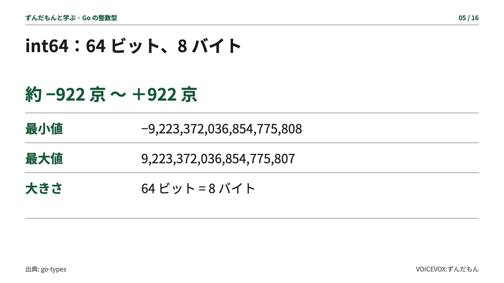
int64は64ビット、8バイトなのだ。
およそマイナス922京から、プラス922京まで表せるのだ。
とても広いけれど、無限に大きな整数を入れられるわけではないのだ。
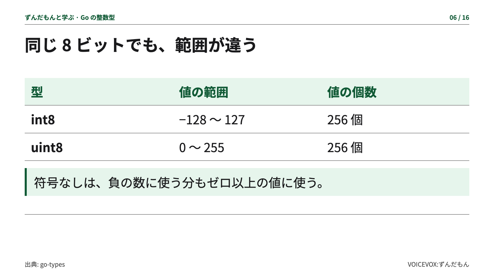
同じ8ビットのint8とuint8を比べるのだ。
int8はマイナス128から127。uint8はゼロから255なのだ。
どちらも値は256個。uint8のほうが記憶容量が多いわけではないのだ。
符号付きでは、半分を負の数、残りをゼロと正の数に使っているのだ。
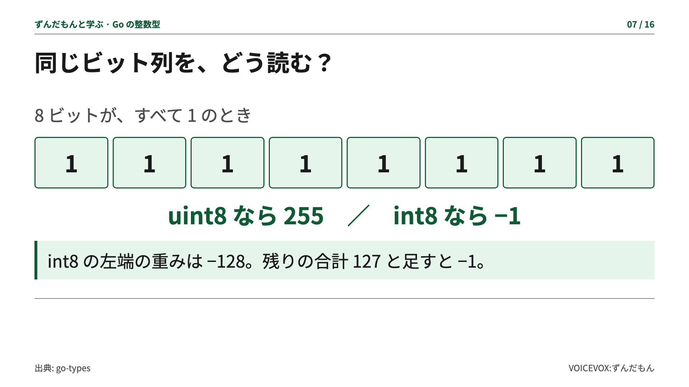
ここで、8個のビットが全部イチの例を見るのだ。
uint8として読めば255。int8として読めばマイナス1なのだ。
符号付きでは、2の補数という表し方を使うのだ。
int8の左端の重みはマイナス128。残りの127と足すと、マイナス1なのだ。
先頭にマイナス記号をつけるだけの仕組みとは違うのだ。
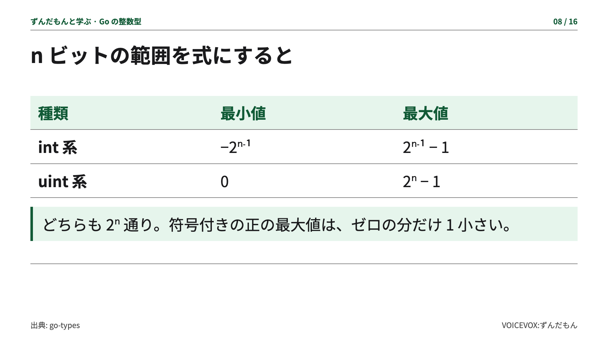
幅をエヌビットとすると、符号なしの最大値は、2のエヌ乗ひく1なのだ。
符号付きは、マイナス2のエヌひく1乗から、プラス2のエヌひく1乗ひく1までなのだ。
ゼロも一つの値なので、正の最大値には、ひく1がつくのだ。
uint16、uint32、uint64も、この同じ規則なのだ。
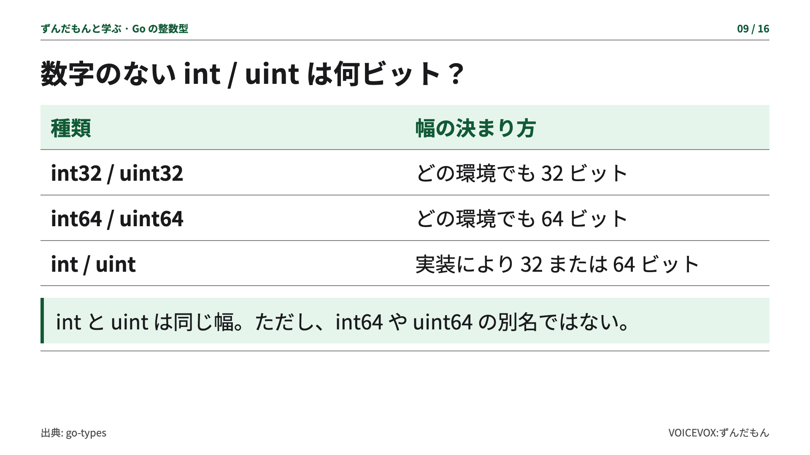
数字のある型は、実行する環境が変わっても、幅が変わらないのだ。
数字のないintとuintは、実装によって32ビットか64ビットになるのだ。
intとuintの幅は同じだけれど、符号の有無は違うのだ。
また、幅が同じでも、intとint64、uintとuint64は別々の型なのだ。
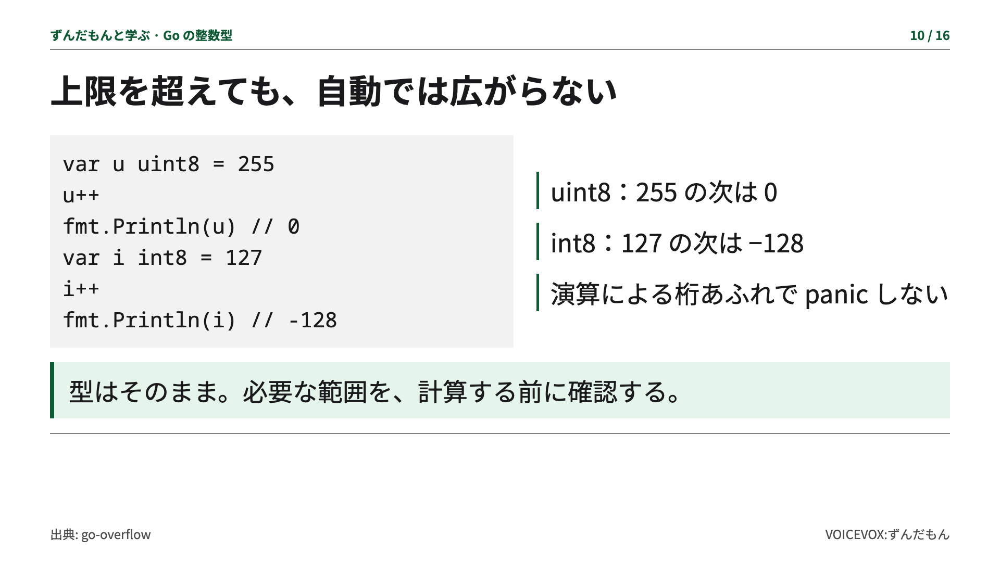
型の上限を超えると、オーバーフロー、つまり桁あふれが起きるのだ。
実行中のuint8の255にイチを足すと、ゼロに戻るのだ。
int8の127にイチを足すと、マイナス128になるのだ。
この演算ではパニックにならず、自動で大きい型にも変わらないのだ。
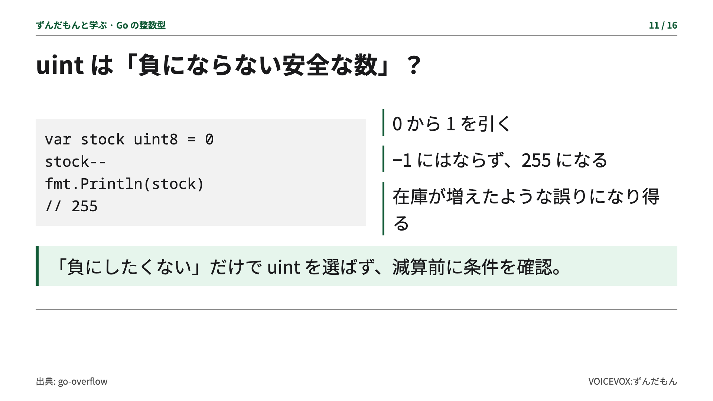
符号なしなら、負の数を防げて安心、とは限らないのだ。
ゼロからイチを引くと、uint8では255に戻るのだ。
在庫ゼロが255に見えたら困るので、減算してよいか先に確認するのだ。
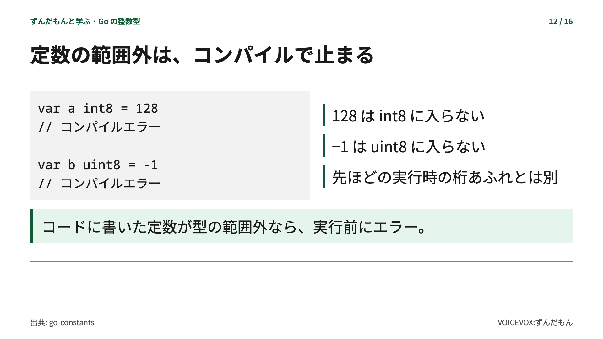
一方、定数として128をint8に入れようとすると、コンパイルエラーなのだ。
uint8にマイナス1という定数を入れる場合も、実行前に止まるのだ。
実行時の演算と、定数の範囲チェックを区別するのだ。
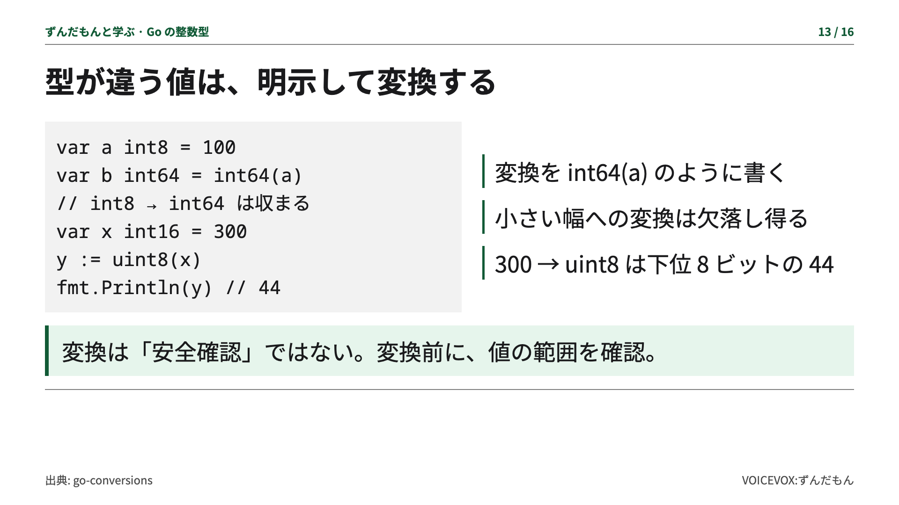
異なる整数型の値を代入するときは、変換を明示するのだ。
たとえばint8の値をint64に変えると、元の値は必ず収まるのだ。
でも小さい幅への変換では、上位のビットが切り捨てられるのだ。
int16の変数に入った300をuint8にすると、44になってしまうのだ。
変換は自動の安全チェックではないので、先に範囲を確かめるのだ。
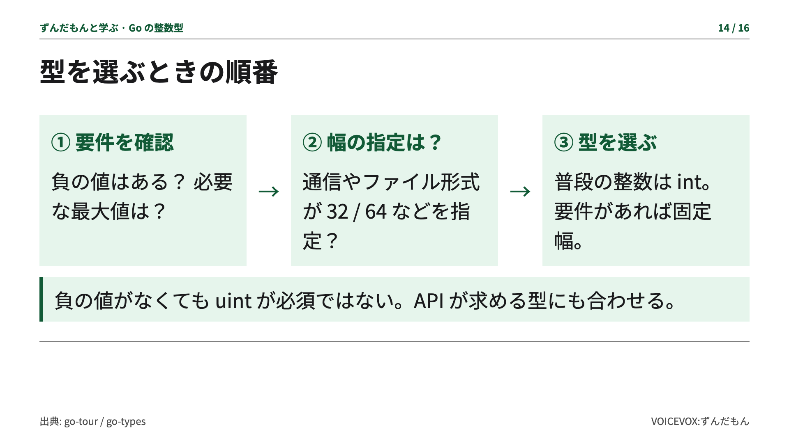
型を選ぶときは、まず負の値があるか、どこまでの値が必要かを確かめるのだ。
通信やファイルの形式で幅が決まっていれば、それに合う固定幅の型を選ぶのだ。
特別な理由がなければ、普段の整数はintを出発点にするとよいのだ。
負の値がないという理由だけで、必ずuintにする必要はないのだ。
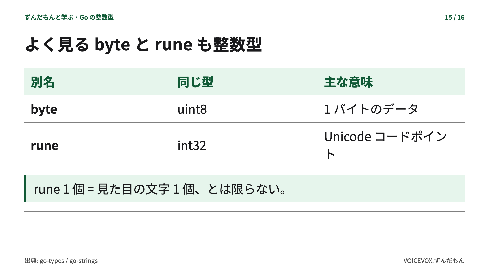
最後に、byteはuint8の別名で、1バイトのデータによく使うのだ。
runeはint32の別名で、Unicodeのコードポイントを扱うのだ。
ただし、見た目の文字一つが、必ずrune一つになるわけではないのだ。
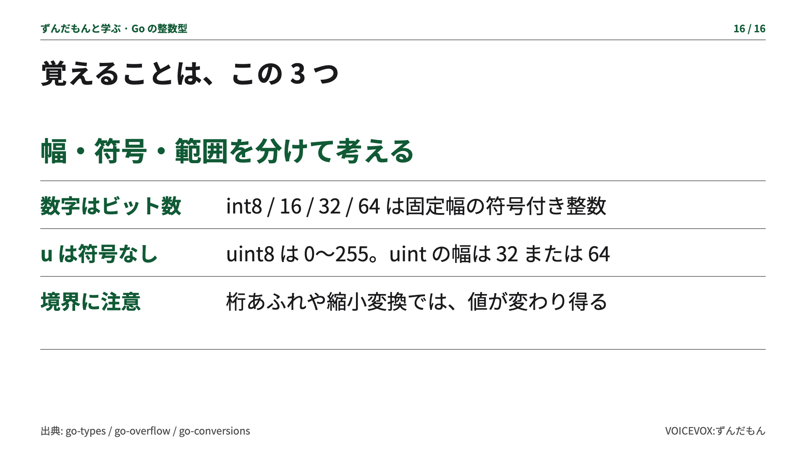
まとめるのだ。数字はビット数で、uは符号なしを表すのだ。
int8からint64は固定幅。数字のないuintは、32ビットか64ビットなのだ。
同じ幅でも値の範囲が変わり、桁あふれや変換には注意が必要なのだ。
幅、符号、必要な範囲。この三つで選べば、型の違いを説明できるのだ。